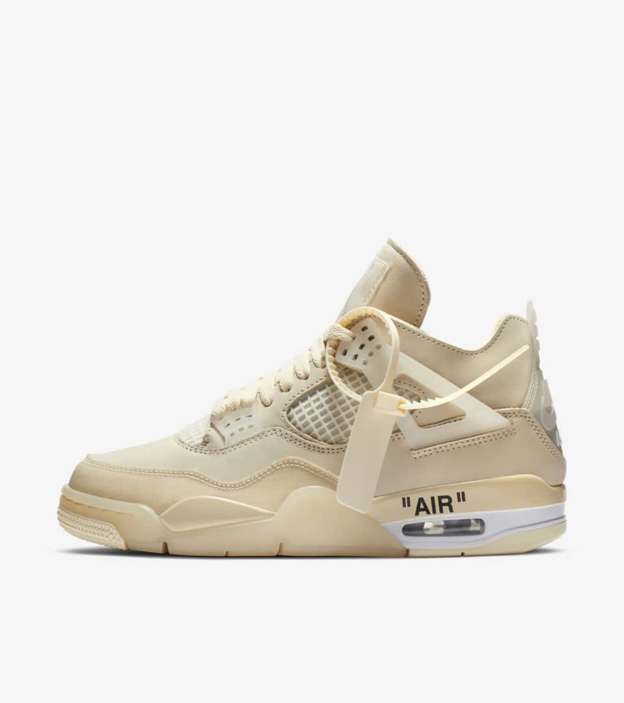

Lab 11 Advanced Block-level Styling
The purpose of this lab was to experiment with block level styling.
Challenges
Some challenges I had in this lab was finishing the lab on time. My partner Jeremy
did a great job and finished his big I had him waiting because I had a 10 page paper to write
and I was up very late. I set my alarm to wake up pretty earlier but I slept through it. With the
styling I didn’t really have any issues but I did spend some time on the nav linking.
Results
Ish's Favorite Sneakers
Sup yall, to add some flavor to my webpage im going to add some photos of Sneakers I like.
Under each photo is the name of the sneaker. You may already know what they are.
This is the Air Jordan 1 High OG "Chicago"
 br>
br>This is the Nike Air Force 1 "White"
 br>This is the Air Jordan 4 "Off-White"